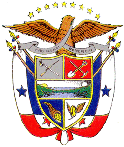
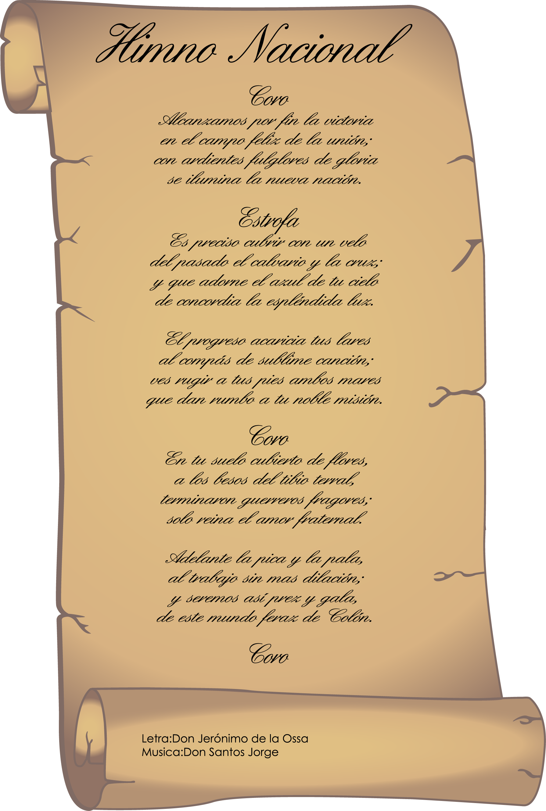
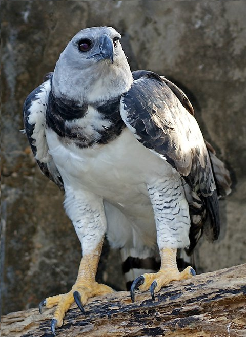
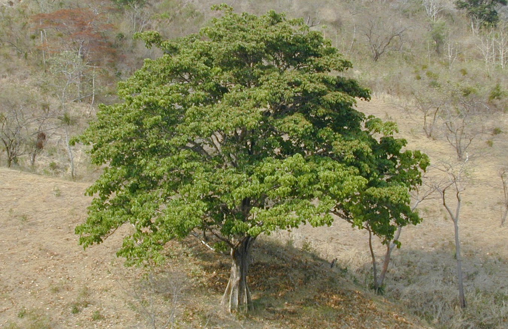
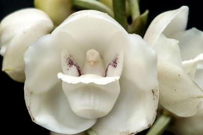
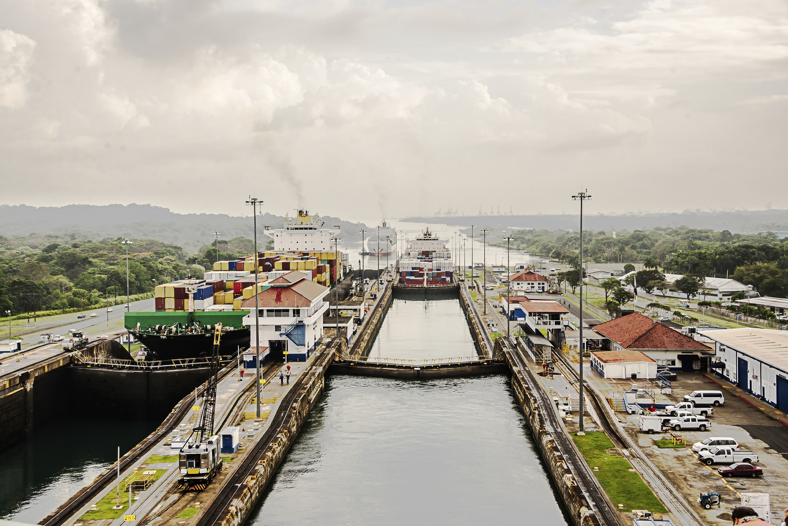
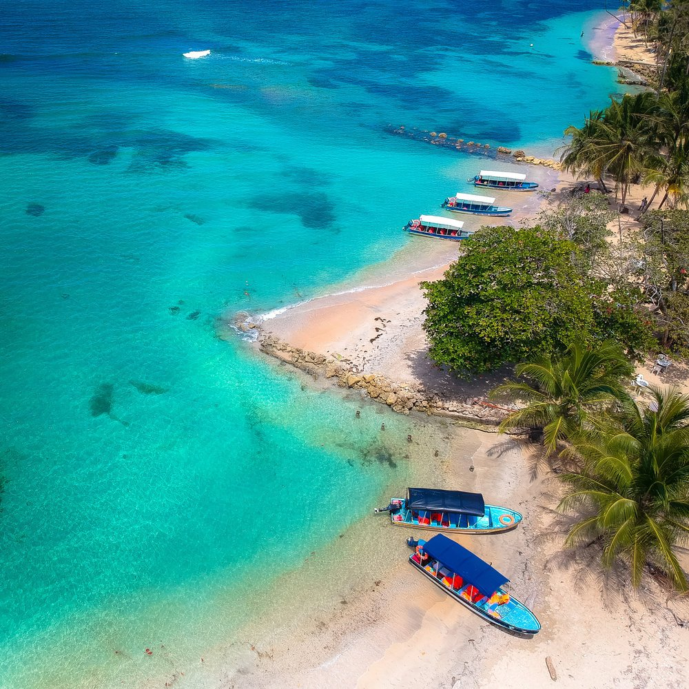
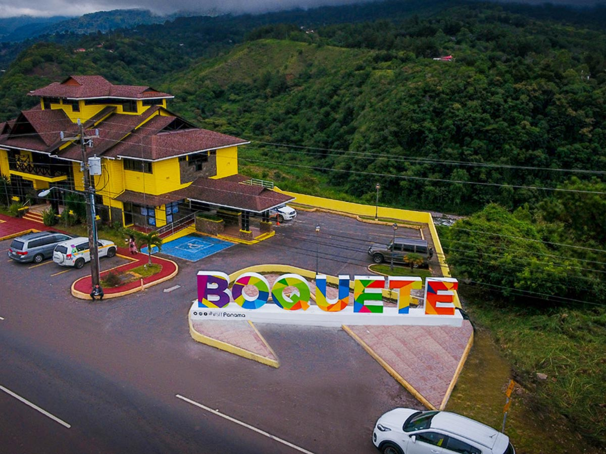
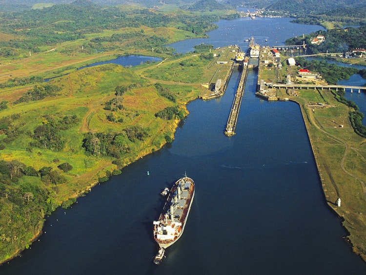
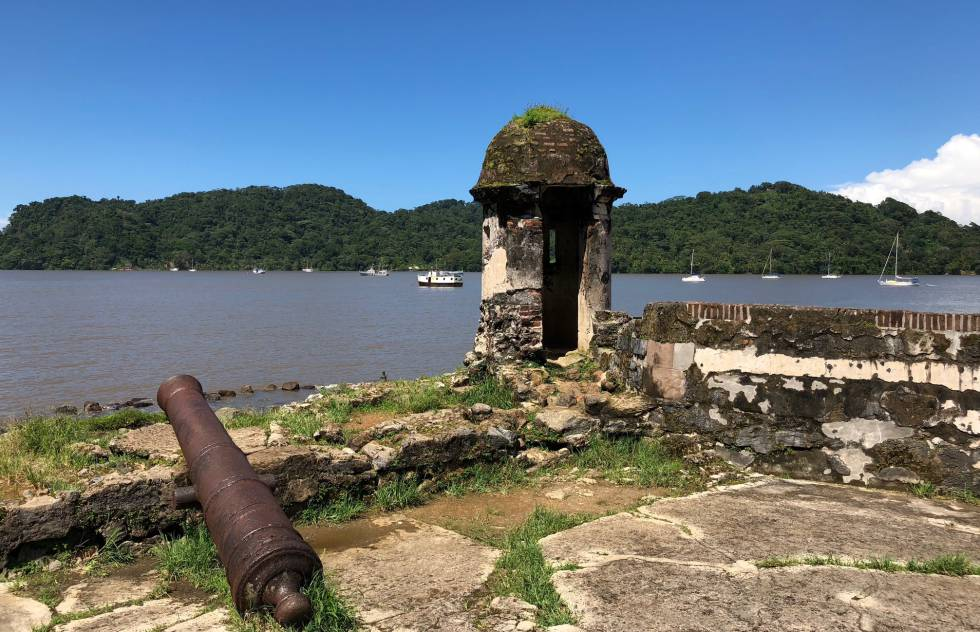

Situado al sureste de Centroamérica, la República de Panamá cuenta
con una población superior a los cuatro millones de habitantes.
Más del 70% de los panameños habita en áreas urbanas, y la mitad
de ellos en la ciudad de Panamá, su capital. Panamá el país más
meridional y uno de los más biodiversos, formado en su mayoría por
tierras bajas. Su condición de país de tránsito lo convirtió
tempranamente en un punto de encuentro de culturas provenientes
de todo el mundo.

Escudo Nacional
El Escudo de Armas de la República de Panamá es el emblema heráldico que representa al país, y que junto con la bandera y el himno nacional, tiene la categoría de símbolo de la Nación por mandato de la Ley.
Bandera Nacional
Nació en la clandestinidad de la noche del 2 de noviembre de 1903, surgió de la imaginación de don Manuel Encarnación Amador, hijo del primer presidente de la República, Manuel Amador Guerrero.

Himno Nacional
El Himno Nacional de la República de Panamá es uno de los símbolos patrios de dicho país, la música es de Santos Jorge Amátrian y la letra de Jerónimo de la Ossa.

Ave Nacional
El Águila Harpía es el ave nacional de Panamá, su hábitat se extiende desde Centroamérica hasta Brasil.

Árbol Nacional
El árbol nacional de Panamá, Sterculia apetala, conocido simplemente como el árbol Panamá, es un árbol alto y recto impresionante por su tronco liso y vertical.

Flor Nacional
Flor del Espíritu Santo ,cuyo nombre científico es Peristeria elata. Se caracteriza por tener pétalos de un color marfil intenso, adornados en el centro de su libelo con una bien definida y delicada paloma que florece en los meses de julio a octubre.

Canal de Panamá
El canal de Panamá es una vía de navegación interoceánica ubicada entre el mar Caribe y el océano Pacífico. Atraviesa el punto más estrecho del istmo de Panamá.

Casco Antiguo
El Casco Antiguo o Casco Viejo es el nombre que recibe el sitio adonde fue trasladada en 1673 la ciudad de Panamá.

Bocas del Toro
Bocas del Toro es una provincia de Panamá que abarca una cadena de islas frente a la costa del Caribe, junto con una sección de territorio continental cercano con un bosque tropical biodiverso.

Boquete
Boquete es una pequeña ciudad sobre el río Caldera, en el oeste de Panamá. Los montes de Chiriquí que la rodean albergan plantaciones de café y el Parque Nacional del volcán Barú en el oeste.

Lago Gatún
El lago Gatún es un gran lago artificial localizado en Panamá, y es un elemento clave del canal de Panamá, porque sirve para que transiten los barcos a lo largo de 33 km a través del istmo de Panamá.

Portobelo
Portobelo es un puerto natural y un poblado ubicado en la República de Panamá. Fue una de las poblaciones más importantes de América durante la época virreinal.